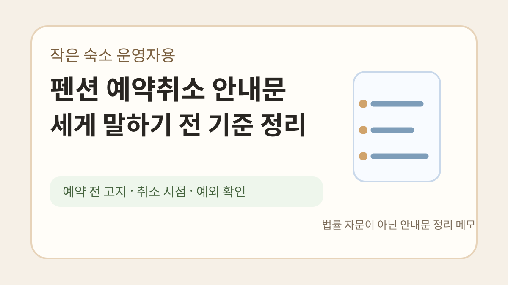
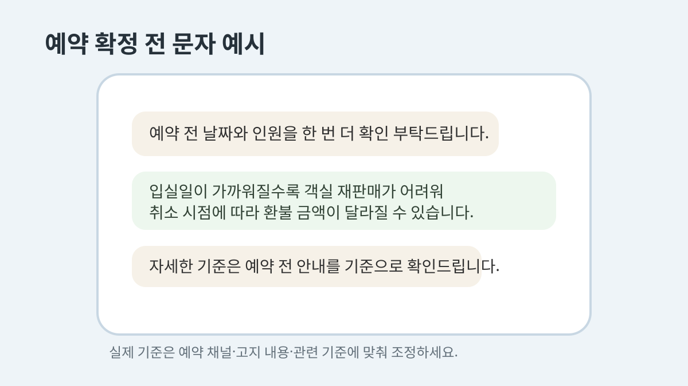
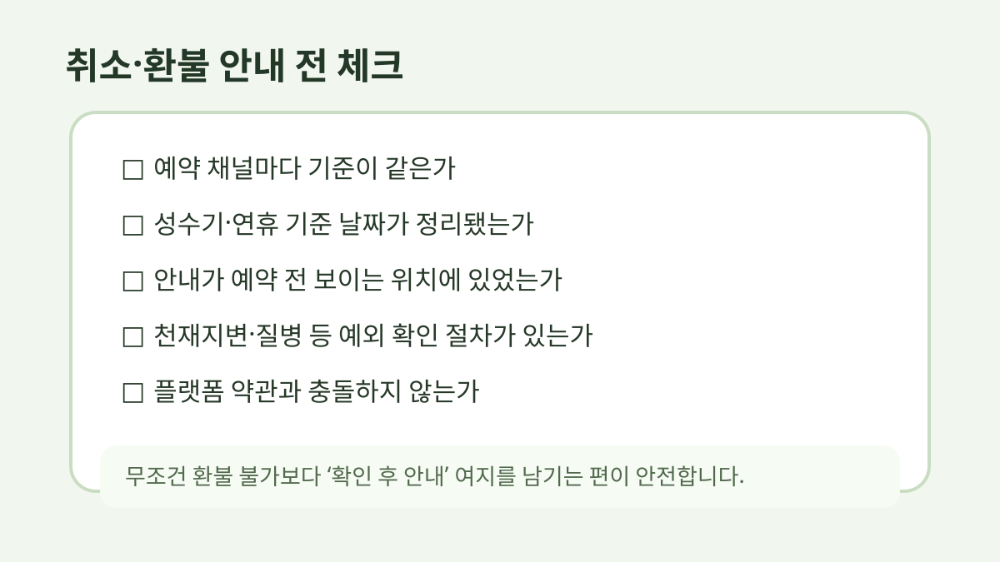

펜션 예약취소 안내문, 세게 말하기 전에 기준부터 정리해두면 덜 싸웁니다
펜션이나 작은 숙소를 운영하면 예약 취소 연락이 제일 조심스럽습니다.
손님 입장에서는 갑자기 일정이 바뀐 거고, 운영자 입장에서는 이미 방 하나가 묶여 있던 시간입니다.
문제는 이때 말투가 조금만 세도 바로 감정싸움처럼 보인다는 점입니다.
그래서 “환불 불가입니다”부터 말하기보다, 예약 전에 어떤 기준으로 안내했는지가 더 중요합니다.
이 글은 법률 자문이 아닙니다.
숙박업 운영자가 예약 전후 안내문을 정리할 때 참고할 수 있는 실무 메모에 가깝습니다.
정확한 분쟁 기준은 공정거래위원회/소비자원 자료, 예약 플랫폼 약관, 개별 예약 조건을 함께 확인해야 합니다.

예약 확정 전에 먼저 보여줘야 합니다
취소 규정은 취소가 들어온 뒤에 처음 말하면 거의 늦습니다.
손님은 “예약할 때 못 봤는데요”라고 느낄 수 있고, 운영자는 “이미 공지했는데요”라고 말하게 됩니다.
그래서 예약 확정 전에 짧게라도 남겨두는 편이 안전합니다.
카카오톡, 문자, 예약폼, 입금 안내 중 하나에는 꼭 들어가야 합니다.
예시는 이 정도로 시작할 수 있습니다.
예약 확정 전 안내드립니다.
입실일이 가까워질수록 객실 재판매가 어려워 취소 시점에 따라 환불 금액이 달라질 수 있습니다.
예약 전 날짜와 인원을 한 번 더 확인 부탁드립니다.
딱딱하게 보일 수 있지만, 나중에 서로 기억이 다른 것보다 낫습니다.
“환불 불가”보다 “취소 시점”을 먼저 말합니다
작은 숙소일수록 당일 취소 한 건이 크게 느껴집니다.
그렇다고 모든 상황을 무조건 환불 불가로 쓰면 분쟁 위험이 커질 수 있습니다.
문구는 이렇게 바꾸는 편이 낫습니다.
취소 시점에 따라 환불 기준이 달라질 수 있습니다.
입실일에 가까운 취소는 객실 재판매가 어려워 일부 금액이 공제될 수 있습니다.
자세한 기준은 예약 전 안내드린 취소 규정과 예약 채널 기준을 함께 확인해 안내드립니다.
말은 길어졌지만, 손님에게 “왜 그런지”가 보입니다.
이게 은근히 중요합니다.

성수기와 비수기는 따로 적어두는 게 좋습니다
숙박업은 날짜에 따라 가치가 크게 달라집니다.
평일 비수기와 여름 휴가철 토요일은 취소가 주는 손실이 다릅니다.
그래서 하나의 문장으로 다 처리하기보다, 최소한 이렇게 나눠두는 편이 좋습니다.
• 일반 기간
• 성수기/연휴 기간
• 입실 임박 예약
• 단체/연박 예약
• 기상 악화나 천재지변처럼 별도 확인이 필요한 경우
여기서 중요한 건 “업장 마음대로 세게 쓰기”가 아닙니다.
소비자분쟁해결기준, 예약 플랫폼 약관, 실제 고지 여부를 같이 봐야 합니다.
취소 연락을 받았을 때 답장 순서
취소 연락이 오면 바로 금액부터 말하고 싶어집니다.
하지만 답장 순서를 조금 바꾸면 덜 날카롭게 보입니다.
저는 이런 흐름이 낫다고 봅니다.
- 취소 요청 확인
- 예약 정보 확인
- 사전 안내된 기준 언급
- 환불 가능 금액 또는 확인 필요 사항 안내
- 처리 예상 시간 안내
예시는 이렇습니다.
취소 요청 확인했습니다.
예약일은 7월 20일, 객실은 A동 201호로 확인됩니다.
예약 확정 시 안내드린 취소 기준에 따라 환불 가능 금액을 확인해드리겠습니다.
결제수단에 따라 실제 입금까지는 며칠 정도 걸릴 수 있습니다.
이 정도만 해도 “안 됩니다” 느낌이 줄어듭니다.
손님에게 불리한 문구는 다시 확인합니다
가끔 안내문에 이런 문장을 넣고 싶을 때가 있습니다.
어떤 사유로도 환불 불가합니다.
운영자 입장에서는 확실해 보여도, 실제 분쟁에서는 문제가 될 수 있습니다.
특히 예약 전에 충분히 고지하지 않았거나, 플랫폼 약관과 다르거나, 소비자에게 지나치게 불리하면 더 조심해야 합니다.
그래서 문구는 강하게 닫기보다 확인 여지를 남기는 편이 안전합니다.
취소 및 환불은 예약 시 안내된 기준, 이용 채널의 약관, 관련 소비자분쟁 기준을 함께 확인해 처리됩니다.
완벽한 문장은 아니지만, 적어도 “무조건 안 됨”처럼 보이진 않습니다.

예약 전 체크리스트
취소 안내문을 쓰기 전에 아래를 먼저 확인해두면 좋습니다.
• 예약 채널마다 취소 기준이 같은가
• 성수기/비수기 기준 날짜가 정리돼 있는가
• 입실 며칠 전부터 수수료가 달라지는가
• 예약금만 받은 경우와 전액 결제한 경우가 다른가
• 취소 안내를 손님이 볼 수 있는 위치에 남겼는가
• 카톡/문자/예약폼에 기록이 남는가
• 천재지변, 항공/교통 문제, 질병 등 예외 상황은 어떻게 확인할 것인가
생각보다 기본적인 것에서 분쟁이 납니다.
“공지했어요”가 아니라 “어디에, 언제, 어떤 문장으로 보여줬는지”가 남아야 합니다.
너무 세게 쓰지 않아도 기준은 세울 수 있습니다
예약 취소 안내문은 손님을 겁주는 문구가 아닙니다.
운영자와 손님이 같은 기준을 보고 예약하자는 약속에 가깝습니다.
그래서 핵심은 세 가지입니다.
• 예약 전에 먼저 보여주기
• 취소 시점별로 말하기
• 예외 상황은 단정하지 않고 확인하기
숙소마다 예약 채널, 객실 수, 성수기 기준이 달라서 그대로 복붙하기보다는 말투와 기준을 맞춰 바꾸는 게 좋습니다.
반응이 있으면 예약 확정, 취소 접수, 환불 안내, 날씨 변수, 노쇼 대응 문구를 상황별로 따로 정리해보겠습니다.